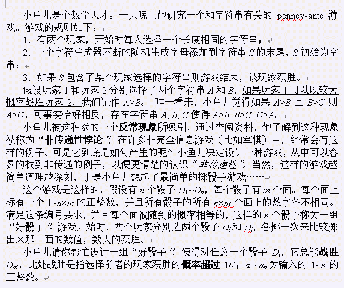
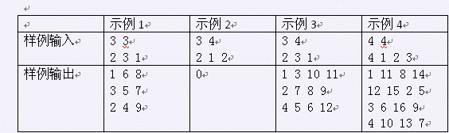

第一行为两个整数n, m。第二行有n个整数，为a1，a2, …, an。
包含n行，每行m个1~n×m的正整数，各不相同，以空格分开。如果有多解，输出任意一组解；如果无解，输出一个整数0。

示例1：D1和D2比，D2和D3比，D3和D1比，前者获胜的几率均为5/9； 示例2：D1战胜D2，D2战胜D1 。矛盾！无解；示例3：D1和D2比，D2和D3比，D3和D1比，前者获胜概率分别为9/16, 9/16, 10/16；示例4：D1和D2比，D2和D3比，D3和D4比，D4和D1比，前者获胜的几率均为9/16。【数据规模】 30%的数据满足n, m≤10 100%的数据满足3≤n, m≤200